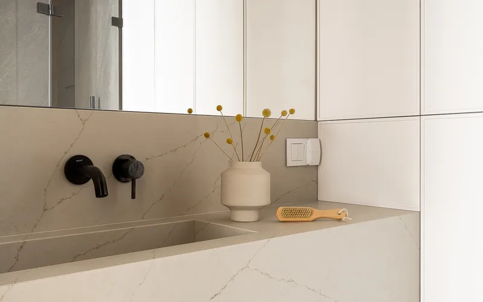
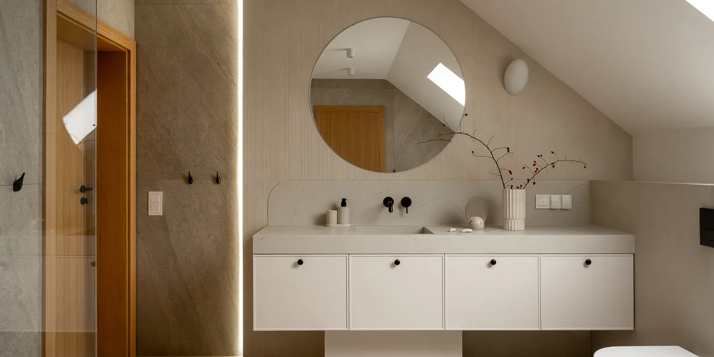
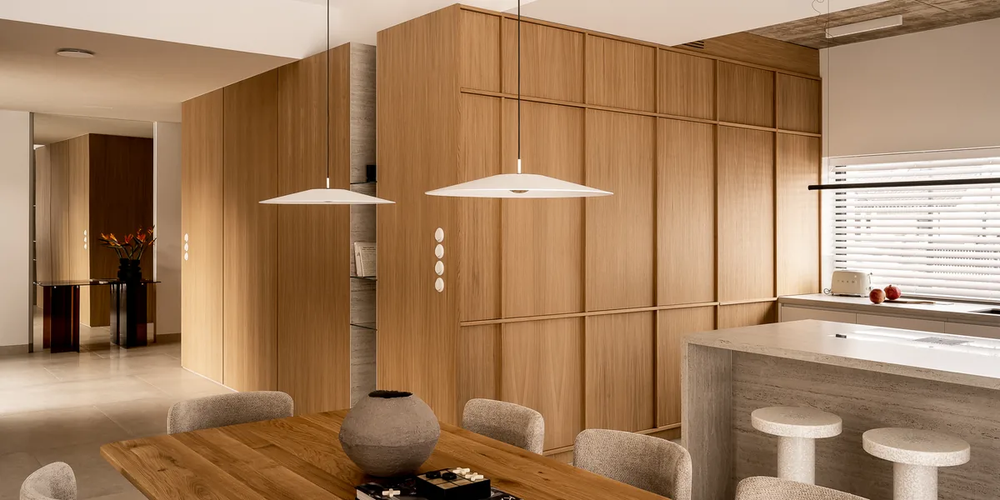

Nasza oferta
Trwałe i eleganckie posadzki z kamienia - inwestycja na długie lata

Kamienna posadzka to inwestycja, która łączy piękno z niezrównaną trwałością. Starannie dobrany materiał gwarantuje praktyczne i zarazem spektakularne wykończenie każdego pomieszczenia. Posadzka z kamienia naturalnego lub sztucznego to fundament, na którym buduje się charakter całego wnętrza - od klasycznych rezydencji po nowoczesne apartamenty.
Oferujemy posadzki z granitu, marmuru, trawertynu, spieków kwarcowych i dektonu. W zależności od koncepcji projektowej realizujemy podłogi z dużych monolitycznych płyt lub klasycznych płytek - zawsze z dbałością o najwyższą jakość wykonania. Każdy materiał dobieramy indywidualnie, uwzględniając przeznaczenie pomieszczenia, natężenie ruchu oraz preferencje estetyczne klienta.

Posadzki kamienne doskonale sprawdzają się w holach wejściowych i korytarzach, gdzie muszą znosić intensywny ruch i jednocześnie robić wrażenie już od pierwszego kroku. Granit i spieki kwarcowe w tych przestrzeniach gwarantują odporność na ścieranie, a ich polerowana powierzchnia podkreśla reprezentacyjny charakter wnętrza.
Łazienki wymagają materiałów odpornych na wilgoć i łatwych w utrzymaniu czystości. Kamień naturalny, odpowiednio zaimpregnowany, doskonale spełnia te wymagania. Stosujemy powierzchnie o zwiększonej antypoślizgowości - płomieniowane lub szczotkowane - które zapewniają bezpieczeństwo nawet na mokrej podłodze.
Kamień to materiał, który nie starzeje się - z czasem nabiera jeszcze głębszego charakteru i szlachetności.
Rodzaje kamienia



Granit to bezsprzecznie najtrwalszy kamień naturalny stosowany na posadzki. Charakteryzuje się najwyższą klasą ścieralności, co czyni go idealnym materiałem nawet do pomieszczeń o bardzo intensywnym ruchu - holi, korytarzy, klatek schodowych czy obiektów użyteczności publicznej. Granitowa posadzka jest odporna na zarysowania, uderzenia mechaniczne i ścieranie.
Marmur od wieków zdobi posadzki najwspanialszych budowli świata - od antycznych świątyń po współczesne rezydencje. Polerowana powierzchnia marmuru odbija światło, nadając pomieszczeniu wrażenie przestronności i blasku. Charakterystyczne żyłkowania - delikatne lub dramatyczne linie przebiegające przez całą płytę - sprawiają, że każda marmurowa posadzka jest unikalna i niepowtarzalna.
Dekton to nowoczesny materiał ultrakompaktowy, który łączy wytrzymałość kamienia z zaawansowaną technologią. Posadzki z dektonu wyróżniają się praktycznie zerową porowatością, co oznacza pełną odporność na plamy, wilgoć i środki chemiczne. Dekton nie wymaga impregnacji ani specjalnej konserwacji - wystarczy regularne mycie.
Spieki kwarcowe to materiał nowej generacji, oferujący wielkoformatowe płyty o grubości zaledwie kilku milimetrów. Dzięki temu posadzka z spieku kwarcowego jest lekka, a jednocześnie niezwykle wytrzymała. Minimalne fugi między dużymi płytami tworzą efekt ciągłej, nieprzerwanej powierzchni, co doskonale wpisuje się w nowoczesne, minimalistyczne aranżacje.
Trawertyn to kamień naturalny o wyjątkowo ciepłym, przyjaznym wyglądzie. Jego porowata struktura i miodowe, kremowe lub beżowe odcienie tworzą atmosferę przytulności i domowego ciepła. Posadzki z trawertynu doskonale sprawdzają się w rustykalnych i prowansalskich wnętrzach, ale również w nowoczesnych aranżacjach, gdzie wprowadzają naturalny kontrast dla minimalistycznych form.

Sposób ułożenia kamienia na posadzce ma ogromny wpływ na odbiór całego wnętrza. Klasyczny układ szachownicy - naprzemiennie ułożone jasne i ciemne płyty - to ponadczasowy motyw, który nadaje pomieszczeniu elegancki, reprezentacyjny charakter.
Szczególną specjalnością naszej pracowni są intarsje i rozety kamienne - dekoracyjne motywy tworzone z precyzyjnie wycinanych i dopasowywanych fragmentów kamienia w różnych kolorach i gatunkach. Rozeta w centrum holu wejściowego, bordiura otaczająca salon czy geometryczny wzór w jadalni - to elementy, które nadają posadzce wyjątkowy, artystyczny charakter.
Każdy element posadzki układamy z najwyższą precyzją - dbając o równe spoiny, dopasowanie wzorów i trwałość gotowej powierzchni.
Kamień w efektowny sposób podkreśli prestiż oraz jakość każdego wnętrza.
Dlaczego warto
Zapraszamy do współpracy
Skontaktuj się z nami - doradzimy najlepsze rozwiązanie dla Twojego projektu. Oferujemy bezpłatną wycenę i profesjonalne doradztwo.
Skontaktuj się